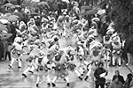
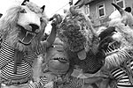
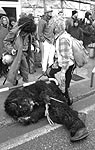
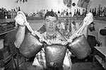

Jednu stvar razumite: zvončari nisu maškare, to je vojska! Ovako su nas poučili u Jurdanićima momci i muži ogrnuti ovčjim runom, koji u Pusno vrime, oboružani golemim zvonima, obilaze mjesta stare Liburnije, kontra zle zime i poganih duhova
 Jednu stvar razumite: zvončari nisu maškare! To je vojska!" Ovako su nas poučili u Jurdanićima momci i muži ogrnuti ovčjim runom, koji u Pusno vrime, što ga ostatak svijeta zove karnevalom, obilaze mjesta stare Liburnije. Golemim zvonima privezanima niz leđa stvaraju šušur i veselje kućama među koje zalaze, a u subotu prije Pokladnog utorka okupe se na saborište u Matuljima, gradiću u opatijskom zaleđu. Njihovi su drevni preci, kažu znanstvenici, odjeveni u ovčje runo i životinjske kože, zastrašujućim maskama i rogovima tjerali najprije zle duhove, pogane vukove i studenu zimu, prizivljući tako dolazak proljeća, i s njime novog života. Nešto kasnije, poganski su kultovi pretvoreni u junačke pothvate, na koncu i u puku zabavu. A službena karnevalska historija stavlja ih u boj s Turcima, ili pak Tatarima.
— Naši su stari povedali kako su se tako na prevaru oslobodili Turaka. Obukli su se u vunu i kože, na glave stavili strašne maske i objesili zvona, izgledalo je ko da ih je stotine, pa su Turci zauvijek pobjegli — kazuje nam Josip Sušanj (64), u čijoj smo konobi u Jurdanićima promatrali odijevanje pravoga zvončara. Sve je slično kao u doba predjedova, osim što svi, osim Halubajskih zvončara, danas nose klobuke ukrašene cvijećem, krabujosnice. Talijanima je, naime, nakon 1918. godine, prema Rapalskom ugovoru, pripao dio Kastavštine, a zbog neke barufe koja se dogodila u vrijeme Pusta, zabranili su nošenje maski. Ni komunistička vlast nije imala sluha za zvončarske simfonije, pa su im u poslijeratnim godinama oduzimali opremu. Samo, dosjetili se Kastavci, pa su oko pasa vezivali različite limene kante, noćne posude i umivaonike, a kad bi milicioneri donijeli ovakav "plijen" nalogodavcima, nastao bi još veći cirkus. I konačno su zvončare ostavili na miru.
Na Antonju va rog
 Kako se zvončarske skupine iz različitih mjesta obilazeći sela nikad nisu smjeli susresti, bilo ih je teško okupiti na zajedničku smotru u općinsko središte. No, atrakcija je prevladala tradiciju, pa se na matuljskom saboru već devetu godinu nađu zvončari iz Brguda, Bregi, Mučića, Žejana, Muna, Vlahova Brega i Korenskog, te iz Halubja. Zvončari iz Rukavca i Zvoneće ostali su vjerni užanci, i u dane Pusta, počevši sa sedamnaestim danom siječnja, kad se na Antonju zatulji va rog, obilaze okolna mjesta, krećući se starim šumskim putovima, a javna prikazivanja ih ne zanimaju.
— I to je pošteno, ljudi se drže svoga — priznaje matuljski načelnik Radivoj Marmilović, dodavši kako je smotra ipak bila dobra odskočna daska za nastupe mnogih skupina po domaćim i stranim gradovima, gdje izazivaju oduševljenje. A u Matulje svake godine dolazi sve više skupina iz čitave Hrvatske i Slovenije, gdje se njeguje tradicija slična zvončarskoj.
No, iz gradića, koji je nastao uz carsku željezničku postaju prema zimovalištima u Opatiji, a općinu, crkvu i školu izgradile su fašističke vlasti, vratimo se mi u konobu Šušnjevih, gdje Zdravko Sušanj i Dorian Marini drže kratki tečaj zvončarske mode.
— Svaki zvončar u našemu kraju, znači, ima bele brageše, hlače, negdje s crvenom prugom, a u nas ne. Gore oblačimo stomanju na kvadre, kariranu košulju, dok ostali zvončari nose mornarske maje. Svi imaju ovčju kožu na leđima, koja se vezuje oko pasa i prsiju. Onda dojdu zvonci, njih tri ukupno su teška osam kila, a srednji je obično veći od druga dva. Ramena se pokriju facolom, maramom. Njezin kolor ni bitan, ali je važno da je oslikana rožicama. Na prsa se veže facolić, rupčić, koji služi za brisanje znoja, i na glavu dođe krabujosnica s tri-četiri šibe — nabraja Zdravko, te kao završetak u ruku uzima baltu, ili bačuku, lijepo oblikovani štap.
Osim po nošnjama, zvončarske se skupine razlikuju i po — plesu.
 — Neki cupkaju ili skakuću, a mi gremo levo-desno, dva, tri koraka i onda se bočno sudaramo. Vođa zvončara, kapo, određuje kako će se tuć u zvona, i kad se počinje delat kolo, koje ima oblik puža — opisuje Dorian. A kapo zvončara Korenskog i Vlahova Brega je Boris Marinac, i s njim šale nema. Osobito u pokladno doba.
— Jer zvonar ni maškara, nego vojnik, on neće i ne smije biti pijan dok traje ophod. Može past i udarit se, a to je sramota za pravoga zvončara. Nije ni lako hodati po tridesetak kilometara, koliko prođu neke grupe u vrijeme Pusta, pa se zato treba držati pravila — objašnjava kapo Marinac.
Vinski doping
Ipak, zvončari smiju, dapače poželjno je, tijekom plesa uzimati doping, u ograničenim količinama, i zato jedna maškara iz pratnje nosi barilce s vinom. Koliko god se vina popije na feštama koje se priređuju u karnevalskim noćima, trošak ne može nadvisiti troškove zvončarske opreme. Jer kapo Boris upozorava kako, primjerice, ovčja koža stoji oko stotinu eura, šešir i facol po pedeset eura, zvono tisuću kuna... nakupi se toga! Što nije razlog da se zvončarskom zanatu ne uče i mlađi, pa s velikima na smotri nastupaju i djeca, pletući svoja mala zvona u mala kola. Za razliku od onog vremena, kad je za zvončara biran momak od najmanje osamnaest, u punoj snazi. Trebalo je za to biti rođen i imati mota, govorilo se.
Matuljani svoju paradu rado podijele s gostima, a ove godine su se predstavili slovenski Sovinjski pusti, Škoromati, Liški pustje i Kurenti, međimurski Štrkli i Čaplje. Najveću su želju za procesijom središtem Matulja imali Đakovčani iz KUD-a Sklad, želeći predstaviti slavonske pokladne svatove, ali...
 — Ništa od toga! Putovali smo od ponoći do jutra do Kvarnera, i na kraju će nam kiša sve pokvariti, jer ne smijemo koristiti svečane nošnje, čija cijena se penje i do dvije tisuće eura, a stare su pedesetak godina. A jooj — teško je Darku Fabijančiću, bušarskome čavi, što je funkcija otprilike jednaka šefu prokotola pokladnih svatova, gdje su muški odjeveni u žene i obratno.
— Eeej, da nam je zapjevat onu našu: "Bušarice, otkrij svoje lice, da ti ljubim vrane obrvice!" Pa onu bolju: "Kolika je u curice zna se, moglo bi se okupati prase!" Šteta da to ne čujete... A gorivo?! Rakija i kulen, bogati!
Zvonac od deset litar
Kad zvončari krenu u ophod po mjestima, staro je pravilo, ne smiju se zaustavljati do kraja, bez obzira kakve ih nedaće snašle. Uostalom, njihovo je ono geslo "Krepat, ma ne molat!". Stoga im ni ledena kiša i neugodni vjetar nisu smetali na saboru u glavnoj matuljskoj ulici. Neopisiv šušur zvona, vika, ples, obredno sudaranje i mahanje drvenim baltima, učas su poslužili drevnoj svrsi, pa ako i nisu rastjerali hladnoću, raspalili su vatromet radosti.
Prve su krenule ujedinjene postrojbe zvončara iz Korenskog i Vlahova Brega, a za njima Zametski zvončari, jedna od mlađih skupina, koji postoje petnaestak godina.
— Ki zna do par let kako će se povedat da su nastali Zametski zvončari. Morda su i oni kega tirali, samo ne zna se koga, aš Turki više ni — šale se Matuljani na račun mladih zvončara, iza kojih pristižu Žejanski zvončari. "Da oni gredu, more se i po uhe oćutit," veli se, jerbo oni u zvona udaraju u ujednačenom ritmu. Potomci su doseljenih Vlaha, a maleni broj ih još uvijek govori arhaičnim jezikom, sličnome rumunjskom. Buci velikih zvona pridružuju se i Munski zvončari, pretpostavlja se doseljenici iz Dalmacije. I jednima i drugima s glava visi šuma šarenih traka, a na vrhu je velika lepeza.
Dondolaš je nekoć u Grobniku bio ne samo pokladni lik, već zanat, i zato oni osim velega zvonca imaju i mići na prsima, a na glave nose krabuju.
Posljednji lupaju Halubajski zvončari iz Viškova. Najviše ih je, čak dvije stotine i pedeset, a jedini su zvončari koji još na glavama nose životinjske maske.
— Naše vele maškari rade se od ovčje ili jelenske kože, a slične su medvjedu, biku, ovnu ili volu. Okol pasa imamo samo jedan zvonac, ma teški, od deset litar — pojašnjava nam halubajski dvojac s tridesetogodišnjim zvončarskim iskustvom, Josip Sušanj i Florian Maras, ponosni što njihovi zvončari imaju i maskote, Vraga i Medveda s čuvarima Ciganima, kojima je posao zalijetanje u gledatelje.
Na Trgu maršala Tita svi zvončari okrenuli su još jedno kolo "na puža," ne prestajući bjesomučno klapati, premda su ratnici nakon višesatnog skakanja u krznenim uniformama dobrano zajapureni i oznojni. No, bitno je Liburniji objaviti da ludesanju još nije — odzvonilo.
piše Damir Šarac
snimio Mario Todorić
February 24, 2004
© 2004 Slobodna Dalmacija